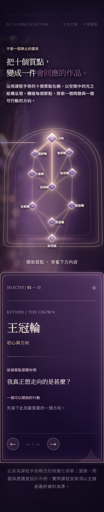
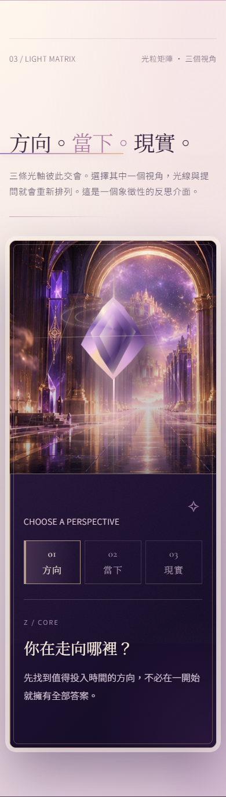
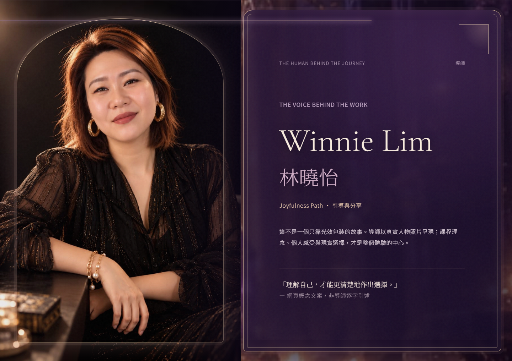
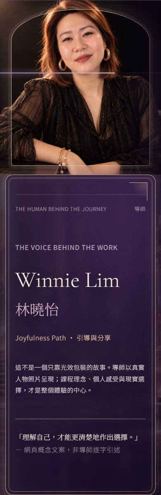
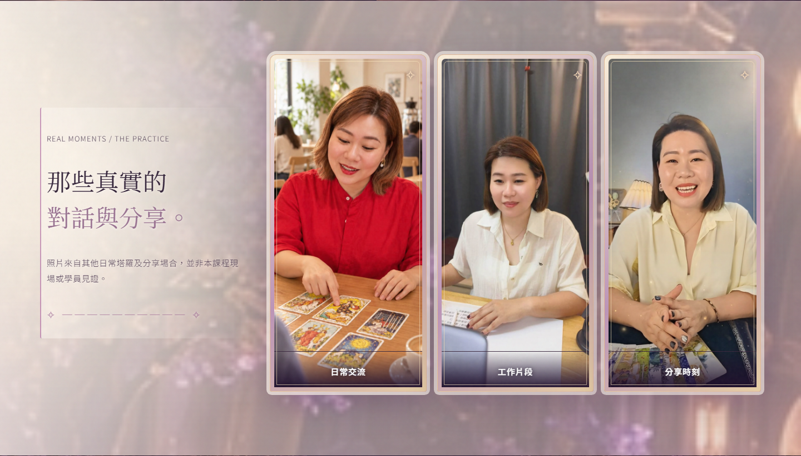
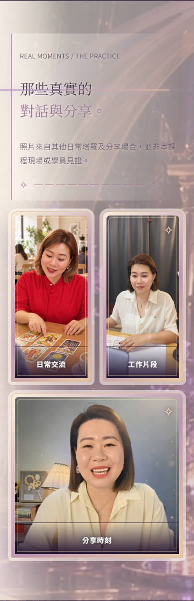

01｜Tree：去重複背景、右側立體香檳金框



02｜Matrix：大尺寸浮動多面晶體



03｜Winnie：真相＋雙層框＋透景光影




04｜真實相片區：建築底景＋字級改善




WEALTH10 · R9 · REAL HTML/CSS · NO NEW IMAGES
只用舊圖及 CSS 砌返可操作 Page：Tree 背景唔再重複同一幅全景；Matrix 有較大、浮動切面晶體；Winnie 真照片保留；三張真實工作照加空間景深；整頁細字加大。比較圖係 MSI Chromium 實際網頁截圖。
開 R9 真互動 Page




